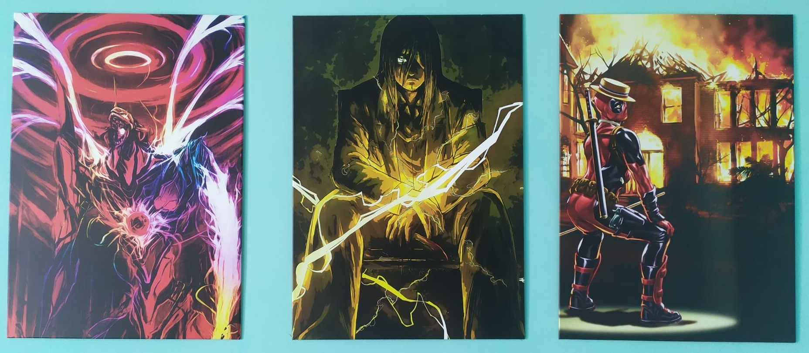

Iniziamo a parlare delle mie Passioni
I miei interessi sono diversi e riguardano di conseguenza vari campi e li andrò ad elencare per semplificarne la lettura:
- anime;
- mobilità elettrica;
- videogiochi;
- cinema;
Anime
Da quando ho iniziato a giocare al PC, all'incirca 3 anni fa, mi sono sempre più avvicinato a Twitch e di conseguenza ho iniziato a fare un pò di zapping tra i vari canali ed è lì che ho conosciuto Dario Moccia, streamer che parla principalmente di anime e manga.
Da quel momento ho iniziato a documentarmi, ho cercato e visionato diversi lavori tra cui Evangelion, Attack on Titan, Viland Saga, Castlevania, Cowboy Bebop, e tanti altri.
Per darvi un'idea del mio interesse vi faccio vedere come sto arredando la mia stanza.

Da destra abbiamo una rappresentazione artistica di Eva 01, l'Eva maggiormente rappresentativo dell'anime Evangelion.
Poi abbiamo Eren Yeager, il protagonista di Attack on Titan e per ultimo Deadpool, personaggio Marvel, non inerente dunque con gli anime, ma gli sono particolarmente affezionato per la sua ironia e duqnue non mi sono fatto scappare un'opera sarcastica come questa.
Opere che ho ritenuto molto carine e artistiche, sicuramente non convenzionali, che mi hanno subito conquistato e che ho acquistato da
Displate.com che si occupa di incentivare l'acquisizione di tali opere con una finalità sociale quale quello della sostenibilità ambientale: infatti per ogni opera acquisita viene piantato un albero.
Iniziativa molto bella che mi ha affascinato e mi ha portato ad acquistare queste opere e siglare anche un'abbonamento mensile.
Mobilità elettrica
Questo è un settore a me molto caro, sono in quella fase della vita in cui vorresti comprarti un'auto e stai valutando le varie opzioni.
Dunque facendo il mio consueto giro su Autoscout24 ho visto una Tesla e da lì è stato amore a prima vista. Chiaramente le mie finanze non mi permettono l'acquisto di un modello così costoso per cui ho iniziato a cercare altri modelli, ad informarmi sulla vita con un'automobile elettrica: autonomia, costi, ricarica, e così via.
Sono rimasto piacevolemnte colpito e sono quasi certo che la mia prima auto sarà elettrica (o al massimo ibrida) in quanto ne riconosco i vantaggi così come ho raccontato nel mio progetto di
copywriting di Start2Impact.
Videogiochi
L'ho già detto credo un paio di volte ma lo ripeterò, sono un videogiocatore, mi piace giocare, mi diverte, condivido questa passione anche con amici lontani e così facendo posso scherzare e divertirmi con loro.
Credo, inoltre, che possa aiutare a migliorare le capacità di una persona dato l'elevato numero di variabili che un gioco contiene quindi sono uno di quelli che lo considera anche uno strumento educativo.
Da piccolo giocavo a Yugioh e alla playstation, principalmente Pes, ora il mio passatempo è divenuto Lol (League of Legends), uno dei principali free to play al mondo, da PC: non ho capacità straordinarie ma mi diverte e ci passo diverso tempo.
Ultimamente ho anche scaricato Yugioh Master Duel, il primo free to play dedicato a Yugioh con le regole originali, gioco che sta spopolando su Twitch, che mi piace seguire e che un pò mi ha riportato all'infanzia di quando andavo a fare i tornei con i miei amici.
Cinema
Il cinema rappresenta uno dei principali passatempo in quanto ci vado almeno una volta alla settimana.
Non ho una vera e propria cultura cinematografica (i film più vecchi non li conosco proprio) ma mi piace esaminarne le storie, seguire le recensioni su YouTube, comprendere i punti critici di un film e una loro eventuale interprentazione: è un mondo che mi incuriosisce.
Indimenticabile fu l'esperienza della maratona di Avengers Endagame al cinema dove iniziammo a vedere Avengers Inifinity War a mezzanotte per poi iniziare all'inicirca alle 3 di notte Endagame: una sala piena, un popolo che ragionava e si emozionava allo stesso modo, ogni verso, ogni gesto sembrava parte di un copione, eravamo tutti sincronizzati e tutti facevamo le stesse cose mostrando il massimo rispetto per un opera che chiudeva un ciclo di 10 anni e che racchiudeva la nostra vita.